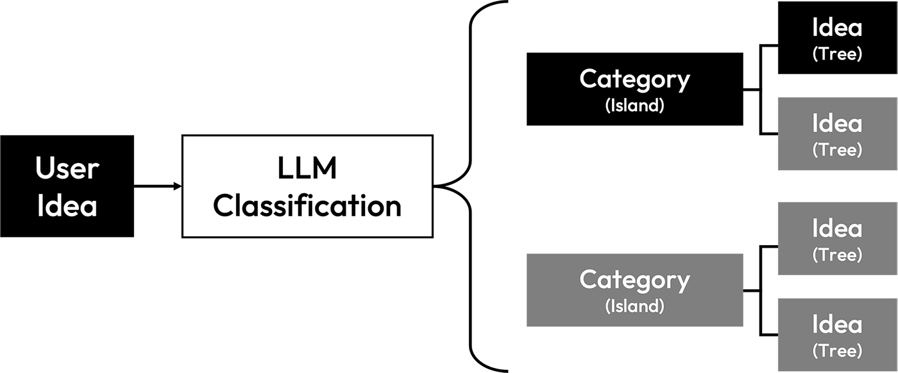
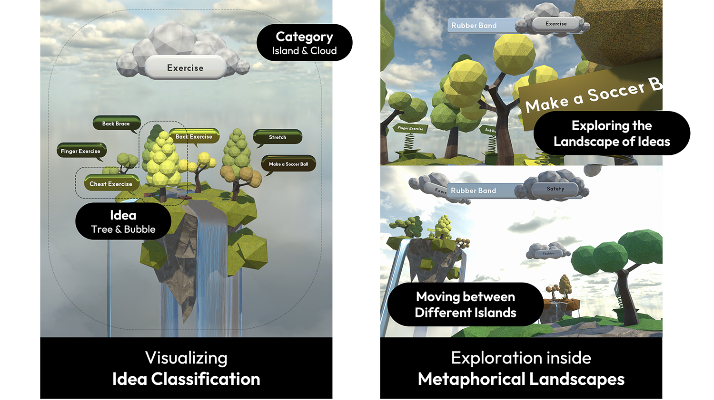
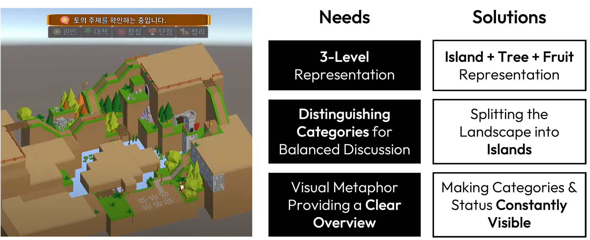
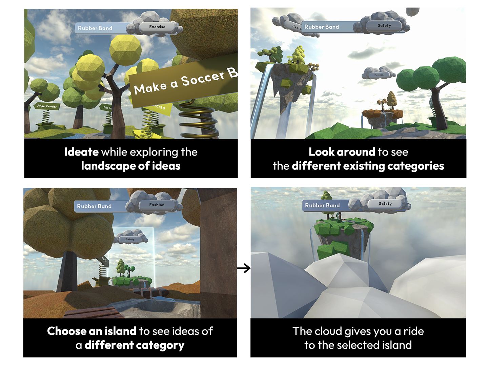
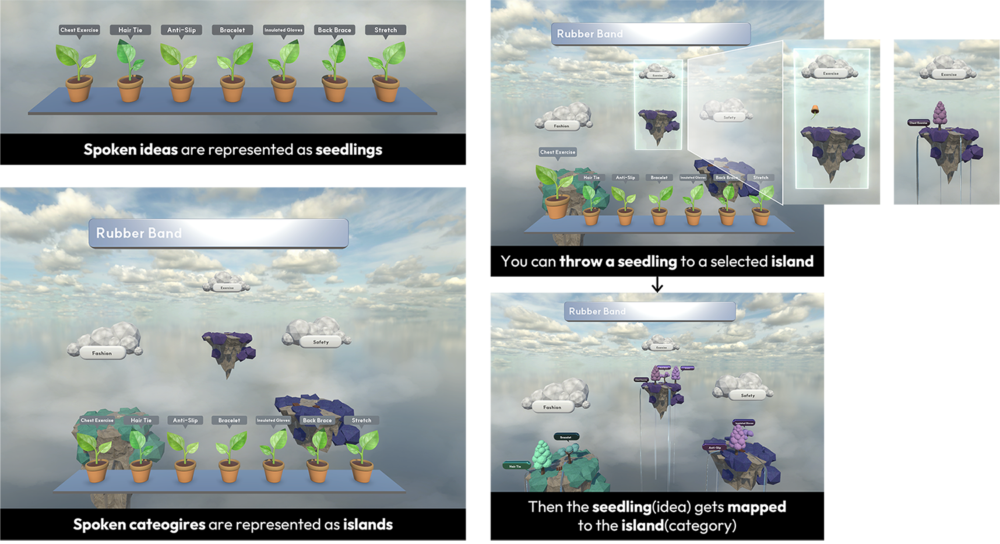
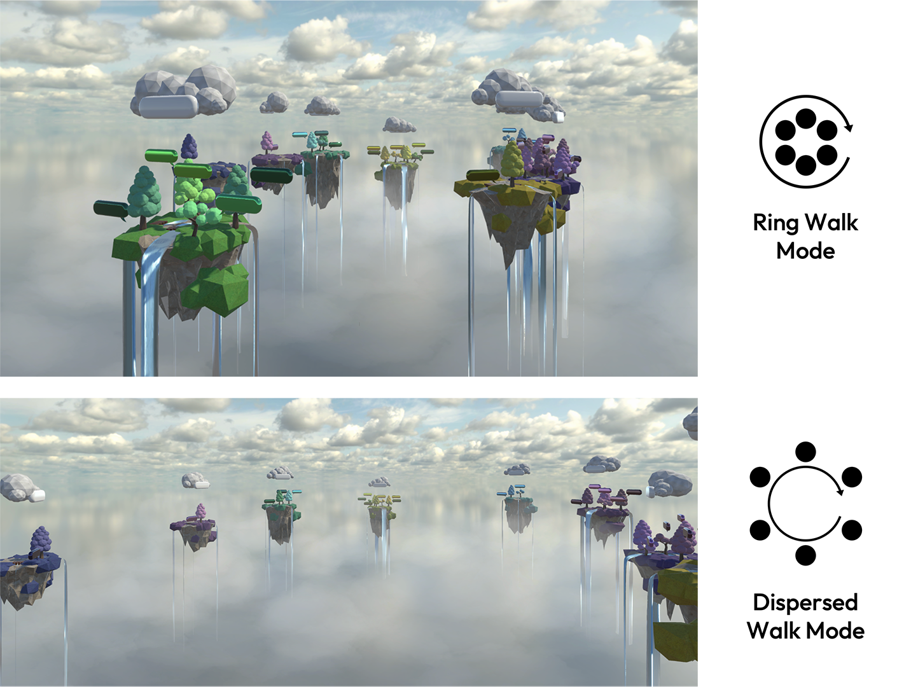

Idea Island
Research Internship at SNU HCS Lab | Jun 2024 - Aug 2024
Role: Ideating and
implementing the Idea Island artifact
- Teamed with a PhD student and guided by a professor
Introduction
Idea Island is based on the “Dual Pathways to Creativity Model” by Nijstad et al. (2010) which introduces two pathways to achieve creativity: flexibility, which considers various categories for new ideas, and persistence, which focuses deeply on a few category.
Idea Island is a novel application designed to provide users with a fun and more effective ideation experience. It uses LLM to classify and visually represent creative ideas in a metaphorical landscape in VR. The user’s ideas are mapped as trees and categories generated by the LLM are visualized as islands where the trees belong.
Idea Island was designed with the intention that, as users explore these island landscapes, they can think broadly, fostering cognitive flexibility. Conversely, when they focus on or navigate within a specific island, they can engage in deeper thinking about that category, fostering cognitive persistence.
Status Quo Ante
When I joined the team, the research had already progressed through user studies, and a landscape-style artifact had been implemented to visualize users’ ideas. However, the team needed more creative input to make the artifact unique. Additionally, the existing artifact did not fully meet key requirements: a clear three-level representation, visual distinction of categories for balanced discussion, and a strong visual metaphor providing an intuitive overview.
To address these challenges, I developed the island + tree + fruit representation, where categories are divided into islands with different colors to enhance clarity and distinction. I also ensured that category names and statuses remain constantly visible within the artifact for better usability.
Main Challenge
“How can we further develop the artifact to better strengthen the cognitive flexbility and persistence pathways?”
Making the Landscape Explorable
One idea I introduced was integrating the finding of Oppezzo and Schwartz (2014) that walking while ideating enhances creativity. Since we were developing a 3D VR artifact, I saw an opportunity to leverage its interactivity by making the Idea Island landscape walkable and explorable.
I then developed this feature, enabling users to ideate while walking through the landscape, explore the surrounding islands of different categories, and even take a cloud ride to another island to discover new idea categories.
Creating Diverse Modes for Further Research
We identified numerous possibilities to expand this research by combining gamification techniques and diverse ideas. As a result, we developed various modes to test in future research, exploring how interactive 3D VR and visual metaphors can enhance users’ ideation processes.
Manual Categorization
Manual categorization mode was created to test the effectiveness of LLM auto-categorization vs. user autonomy. In this mode, the user’s ideas are represented as seedlings, and they can “plant” a seedling on an island to map it to a specific category.
Diverse Walking Modes
We developed modes that allow users to not only walk within the island landscape but also outside of it, providing a macroscopic view to enhance cognitive flexibility.
The Ring Walk Mode lets users walk along the circumference of surrounding idea islands, with islands oriented inward, while the Dispersed Walk Mode allows users to walk outside the circumference, with islands facing outward.
Group Ideation Climate
We also explored using Idea Island to promote a positive group ideation experience. Drawing on the “Groupgarden” metaphorical group mirror concept from Tausch et al. (2014), we developed modes to represent the ideation climate as different weather conditions. With the LLM analyzing the group dynamics, the weather improves when the climate is ideal and worsens when the discussion becomes biased, overly concentrated on one person, judgmental, or similar.
Current Research Results
The initial user experiment showed a statistically significant increase in the number of ideas by 1.29 (p < .01) and the number of categories by 0.88 (p < .01). The research is currently focused on further refining the artifact and conducting follow-up user experiments.